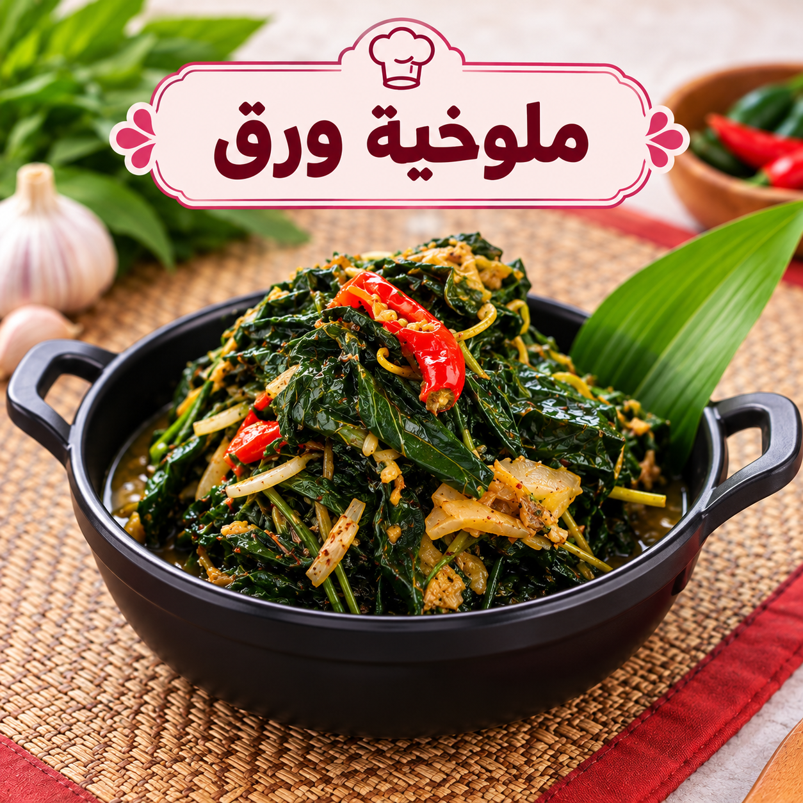

ملوخية ورق بالدجاج
ملوخية ورق بمرق الدجاج

مقادير ملوخية ورق بالدجاج
- 500 غ ملوخية ورق
- 700 غ دجاج
- 6 فصوص ثوم
- 1 ملعقة صغيرة كزبرة ناشفة
- 1½ ملعقة صغيرة ملح
- ½ ملعقة صغيرة فلفل أسود
- 1 ملعقة كبيرة سمنة
- 4 أكواب مرق
طريقة عمل ملوخية ورق بالدجاج
- اسلقي الدجاج حتى ينضج واحتفظي بأربعة أكواب من المرق.
- أضيفي الملوخية للمرق على نار هادئة 15–20 دقيقة.
- حمري الثوم والكزبرة بالسمنة وأضيفيها للملوخية.
- عدلي الملح والفلفل وقدميها مع الأرز والدجاج.